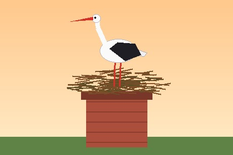

A fehér gólya testhossza 100-115 cm, szárnyfesztávolsága 155-215 cm. Tollazata fehér, csak a szárnyak evezőtollai feketék. Csőre és lába élénkvörös. A nemek külsőre alig különböznek egymástól, a hím valamivel nagyobb a tojónál. A fiatal madarak csőre és lába még sötétebb, barnás árnyalatú.
A kifejlett gólya szinte hangtalan, nincs igazi éneke. A párok az üdvözléskor és a fészeknél a csőrüket összecsattogtatva kelepelnek. Ez a jellegzetes hang messzire elhallatszik, és a fiókák is megtanulják.
Nyílt, nedves területek madara: rétek, legelők, szántók, folyóvölgyek mellett él. Szívesen költ emberi települések közelében. Fészkét magasra, kéményre, villanyoszlopra vagy fa tetejére építi, és a fészket sok éven át használja, évről évre építgeti.

Táplálékát a rétek és szántók gyepén, lassan lépegetve keresi. Főleg békát, gyíkot, nagyobb rovarokat, földigilisztát és kisemlősöket fogyaszt, ritkán halat is.
Fészekalja általában 3-5 fehér tojásból áll. A tojásokon a két szülő felváltva kotlik körülbelül egy hónapig. A fiókák két hónapos korukban hagyják el a fészket.
Hosszú távú vonuló madár. Magyarországra márciusban érkezik, és augusztusban indul vissza Afrikába. A vonulás során a felmelegedő levegő feláramlásait használja, ezért vitorlázva, kevés energiával teszi meg a több ezer kilométeres utat.